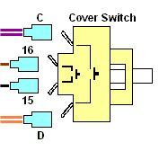
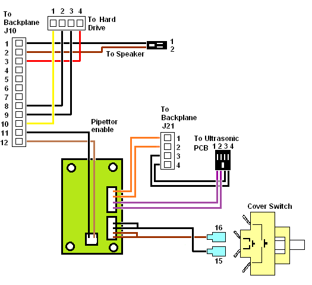
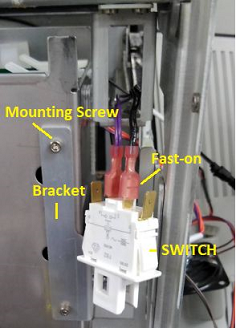

Replacing Front Cover Switch
This procedure describes how to replace or install the front cover switch.
| For the following action... | Refer to... |
| Replacing Old Style Front Cover Switch | Step 1 |
| Replacing or Installing New Style Front Cover Switch | Step 2 |
-
Replace the old style front cover switch.

- Turn off the Analytical Unit power.
- Open the top and front covers.
- Depress the lower switch retainer and partially remove the switch. Then depress the upper retainer and fully remove the switch.
- Remove the Fast-on connectors from the switch.
- Connect the Fast-on connectors to the new switch. (Purple & Orange to the Outer terminals and Black & Brown to the Inner terminals).
- Insert the new switch into the switch bracket.
- Close the covers and power on the AU.
-
Replace or install the new style front cover switch.

- Turn off the Analytical Unit power.
- Open the top and front covers.
- Depress the lower switch retainer and partially remove the switch. Then depress the upper retainer and fully remove the switch.
- Remove the Fast-on connectors from the switch.
-
If the floppy drive is present, then remove the floppy drive and the drive mounting bracket.
- Remove the power and network cables from the right side of the instrument.
- Remove the right instrument cover. (3 button head screws at front, slotted cover hinge screw, cap head screw at rear).
- Remove the floppy drive mounting bracket (4 screws).
- Mount the cover switch PCB bracket to the instrument using 2 of the Hard Drive mounting plate screw holes (use 2 screws from the Floppy Drive mounting bracket if needed) and attach the cover switch PCB to the bracket.
- Remove the existing wire harness connectors from the Speaker, the Hard Drive, the Ultrasonic PCB, J10 and J12 on the backplane.
-
Move the old harness out of the way or remove it.
Note: The old cable needs to be cut for removal, because it does not fit through the hole in the card cage side.
- Route the 2 Fast-on connectors of the new harness through the switch mounting bracket.
- Connect the new Fast-on connectors to the center terminals of the new switch and then mount the switch. (Black & Purple to the inner terminals).
-
Connect the new harness to the Speaker, the Hard Drive, the Ultrasonic PCB, J10 and J21 on the backplane. (route the new harness over the side wall of the card cage).

- Insert the new switch into the switch bracket.
- Close the covers and power on the AU.